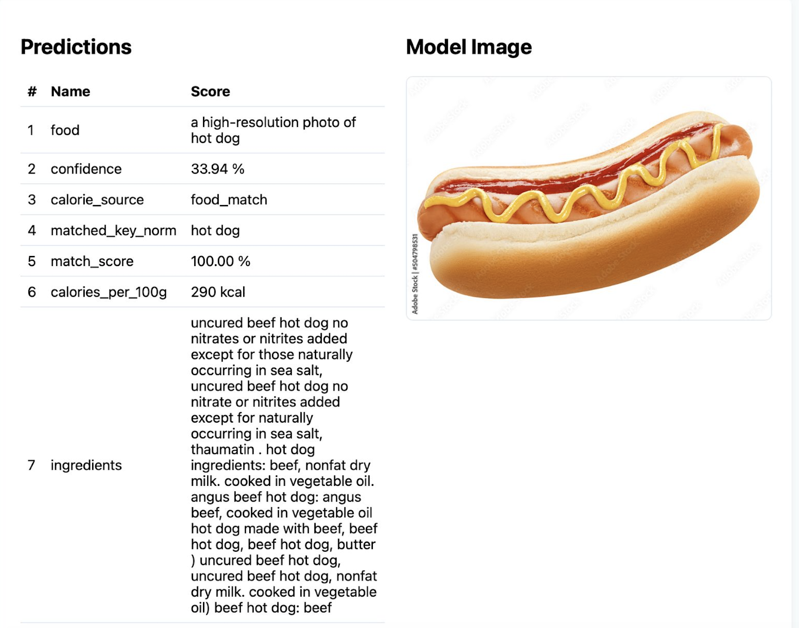
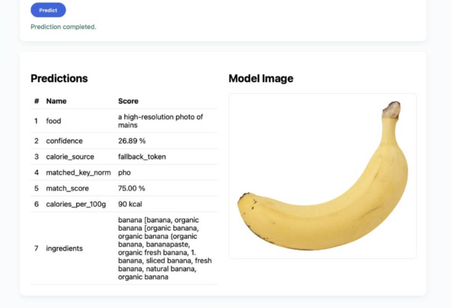

A computer vision system that identifies food from a single photo, detects likely ingredients, and estimates calorie content. Built with CLIP ViT-B/32 for zero-shot food recognition, matched against 249,000+ ingredient embeddings from the USDA FoodData Central database, and served via FastAPI running inside Docker.
By the Numbers
Architecture
Each image request flows through three sequential stages, from visual recognition to nutritional output:
| Stage | Component | What it Does |
|---|---|---|
| 1 | Food Recognition | CLIP ViT-B/32 encodes the image and matches it to food labels via cosine similarity |
| 2 | Ingredient Detection | Image embedding compared against 249,000+ precomputed ingredient vectors from USDA data |
| 3 | Calorie Estimation | 3-layer fallback: direct USDA match, ingredient aggregation, then fuzzy string matching |
Demo
Upload a food photo to the POST /predict endpoint and get back the identified food, confidence score, calorie estimate, and a ranked list of matched ingredients.


{
"food": "hot dog",
"confidence": "33.94%",
"calorie_source": "food_match",
"matched_key_norm": "hot dog",
"match_score": "100.00%",
"calories_per_100g": 290,
"ingredients": [
"uncured beef hot dog",
"angus beef hot dog",
"beef hot dog",
...
]
}
{
"food": "banana",
"confidence": "26.89%",
"calorie_source": "fallback_token",
"matched_key_norm": "banana",
"match_score": "75.00%",
"calories_per_100g": 90,
"ingredients": [
"banana",
"organic banana",
"fresh banana",
"sliced banana",
...
]
}
curl -X POST http://localhost:8000/predict \ -H "Content-Type: multipart/form-data" \ -F "file=@hotdog.jpg;type=image/jpeg"
Calorie Estimation
When the predicted food name does not exactly match a USDA entry (different naming conventions, abbreviations, complex dishes), the system falls back through two additional layers rather than returning an error.
| Layer | Method | When Used |
|---|---|---|
| 1 | Direct USDA Match | Exact string match between predicted food name and USDA database |
| 2 | Ingredient Aggregation | Calorie values summed from top matched ingredients if no direct match |
| 3 | Fuzzy Token Matching | RapidFuzz similarity search over normalized database keys as final fallback |